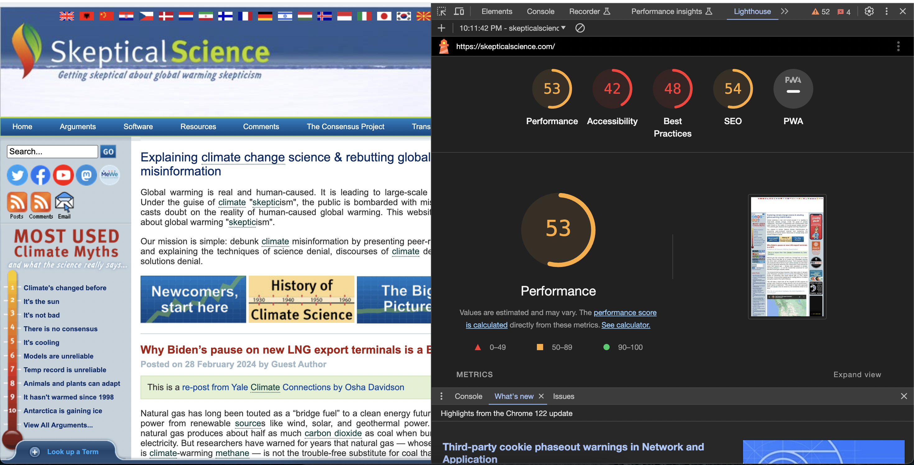

Not too shabby.. but still okay - Honolulu Community College
Let's take a look at a good accessible website.
This looks more modern! Let's check WAVE.
So far so good. Good contrast, no errors, and a bunch of ARIAs. Yay!
Mobile View

Not too shabby here. The only problem is the navigation menu. Nobody could get to the other pages. And that is a problem.
Lighthouse
Ohh.. didn't expect this one to be average. At least we have an "A" on the accessibility section. The score is okay for the SEO and best practices. Creators for this website should do more about the performance of the site! Don't just stop there!
Validator
Yikes. We have 10+ silly syntax errors. It's better than 100+ errors at least. But, these errors are easy to fix. Not sure why this creator of the website didn't even attempt to check the validator. Come on. You can do better!
Outliner

Uh oh. We have 2 "untitled elements". This is no good for the screen reader and for the blind! It's going to be unclear to the blind. I am warning ya. Slap those headers with names at least! Don't slack!
Ending on a good note - AChecker tool
Yeehaw! Now this is just excellent. No guidelines and laws have been broken. This website will likely be viewed more. Congratulations!
Terrible. Just terrible. Tsk. Tsk. Tsk. - Skeptical Science
Let's check out Skeptical Science, a terrible website.

Looks like something out of the fricking 90s. Let's check WAVE.

HOLY CRAP. What is going on here?! This is totally unacceptable with the 35 contrast errors and 91 errors including the missing alt texts in images. Please always check WAVE before you publish websites! Check out the "details" tab for more information!
Mobile view

Well, if this website were a person, its mobile view mode would be in need of a serious makeover! It's like trying to fit a square peg into a round hole. Media queries are the fashion police this site desperately needs to call for some style advice!
Lighthouse
Oh boy. It's an "F". Poor performance, poor accessibility, and did not use best practices. Take a look at the SEO. That is not the number you want. Your business will not gain traction if that were to happen. Be aware.
AChecker tool

How on Earth is this web developer not compliant by testing? The ridiculous about of violations shown is just.. disgusting. This website definitely does not comply with the American with Disabilities Act. And therefore, the people who made this website deserves to be thrown in jail. They're disrespecting the disability community.
Validator

Wow wow wow. Shake your head right now. 100+ syntax errors on the validator. Right after you are done with a page, put your file into the validator and double check so you don't get numerous spam errors at the end.
Ending on a good note -- the outliner

Finally. Finally, we end on a good note. Elements are properly named and listed! At least there are no "untitled elements". Whew... Although, it is not good practice to name an element twice. They named "Term Lookup" twice. The screen reader and the user will get confused!